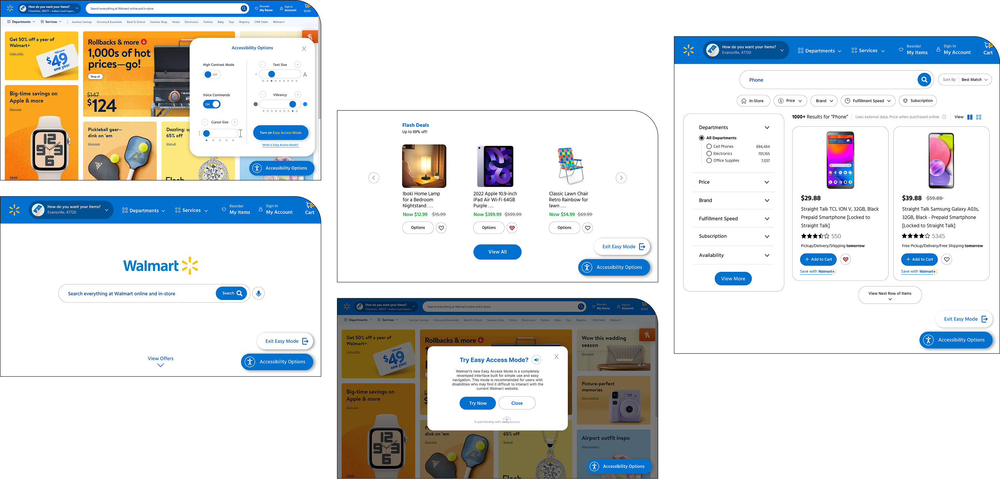
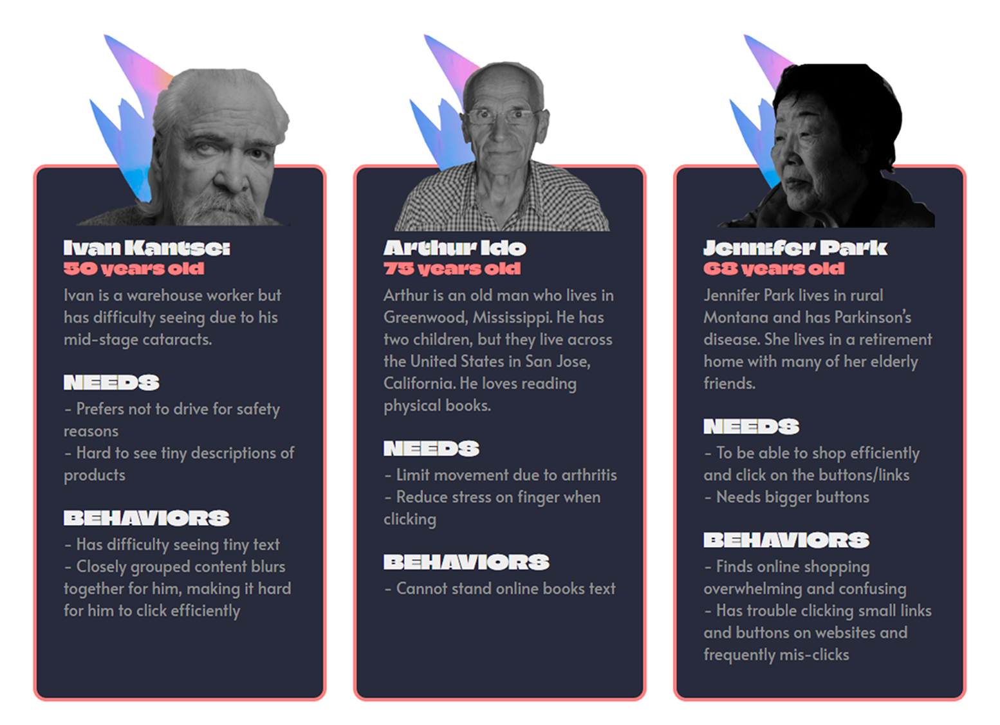
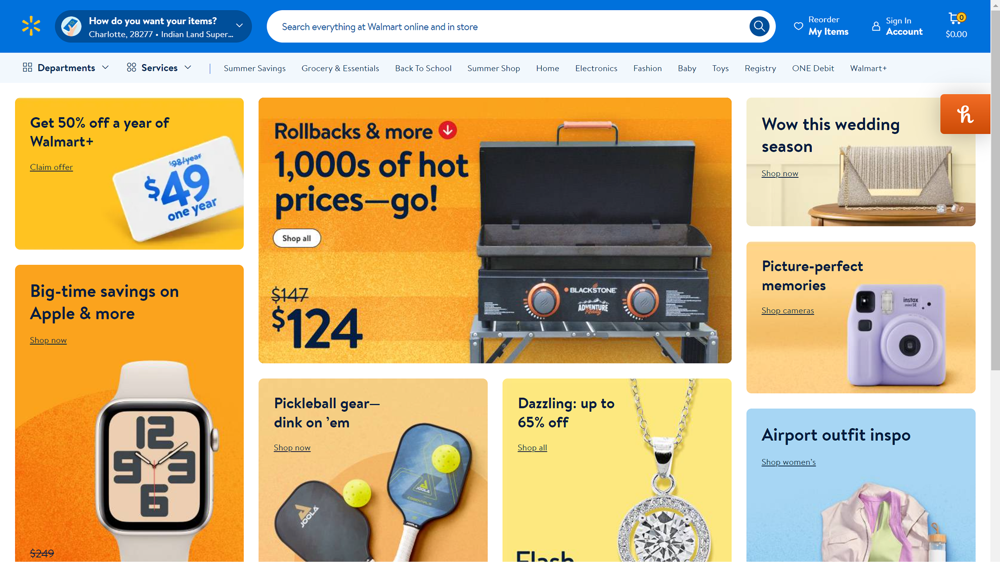
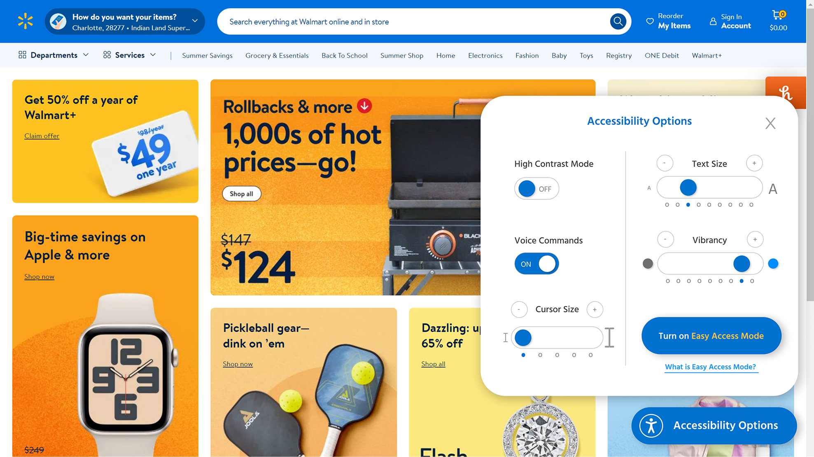
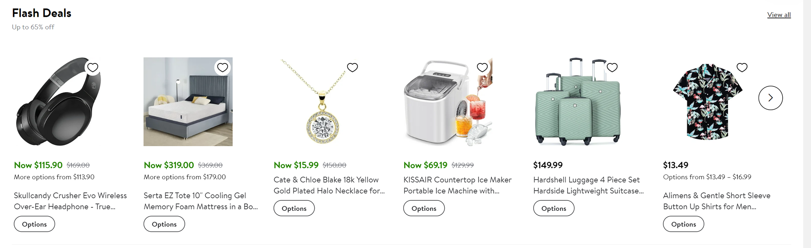
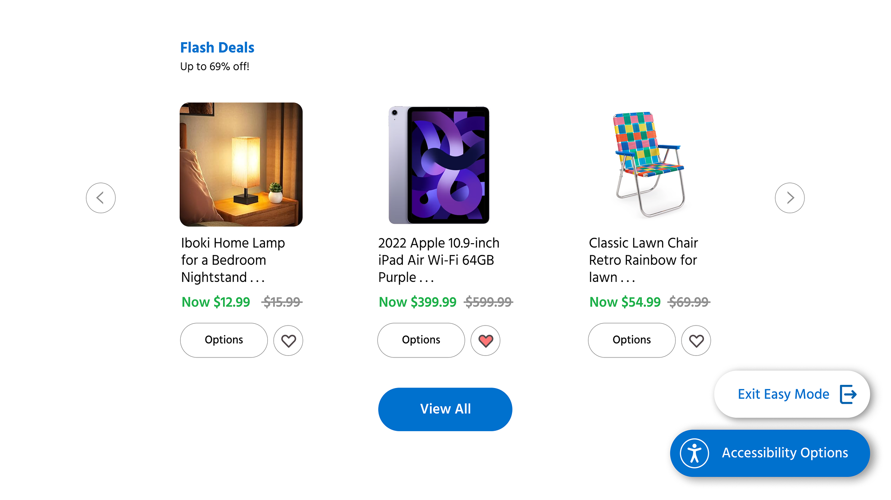
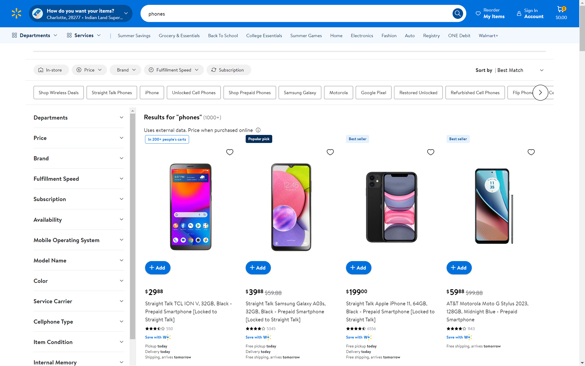
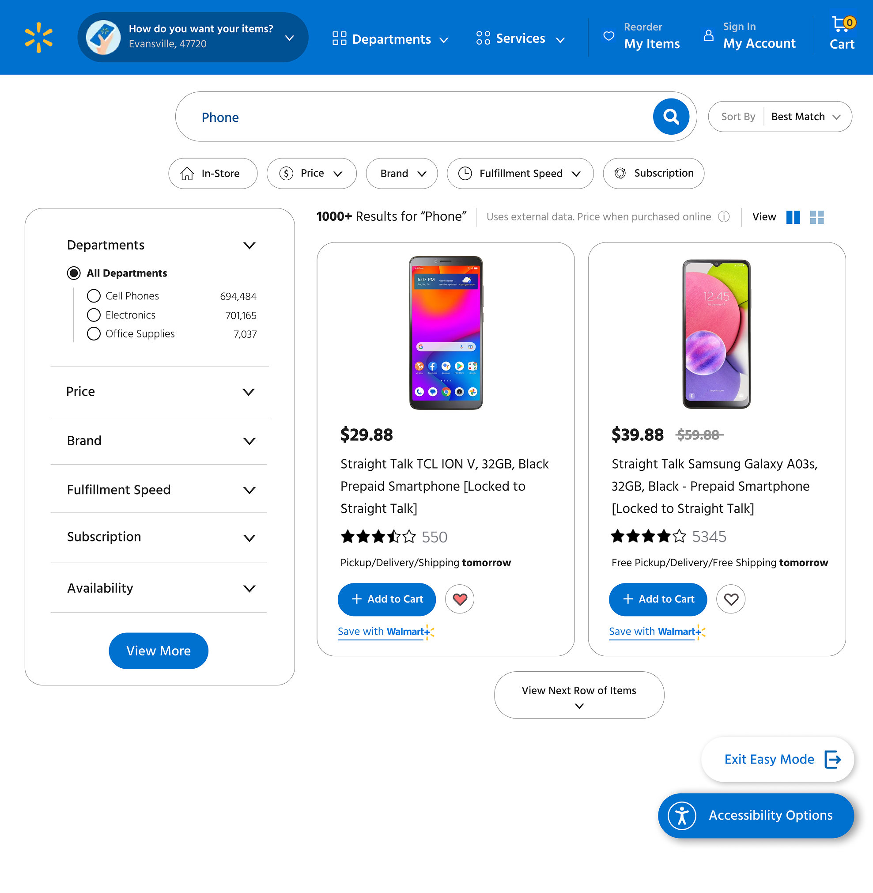
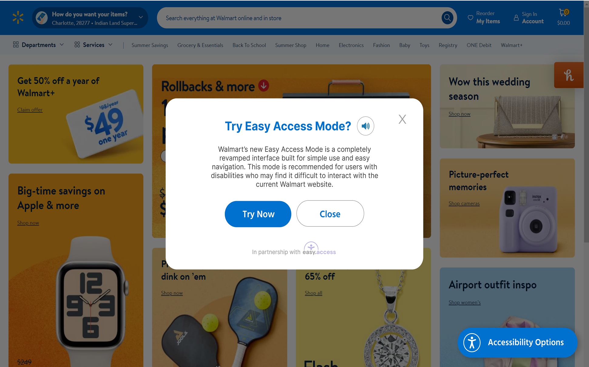
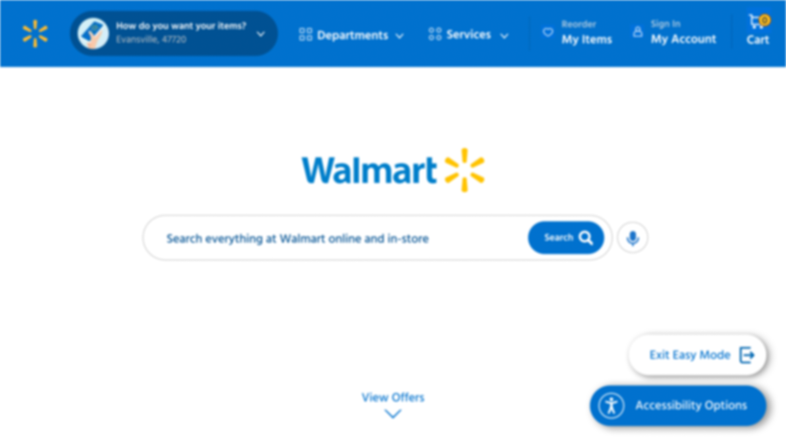

03

Walmart
Adding an accessibility integration and simplified interface to assist elderly online shoppers.

Background
This project proposed an accessibility integration (Easy.Access) onto the current Walmart e-commerce website. It provides accessibility options to users (particularly elderly users) on the Walmart website and also carries a toggleable, simplified interface to help those elderly users navigate the site more easily.
This was the capstone project of an Accenture internship. We chose a diamond client and proposed a solution to one of their problems.
Overview
Problem
1. 57% of individuals over the age of 65 report finding online shopping sites difficult to navigate.
2. With an 18% increase in technology ownership and the highest discretionary income available out of any other generation, this demographic is an underrepresented market that could potentially serve as a large customer base for Walmart.
3. This means Walmart could be losing out on billions of dollars in revenue each year.
User Goals
1. Seamlessly search for items to buy.
2. Purchase items with as little friction as possible.
3. Receive support for their physical limitations.
Limitations
• No access to real users or individuals in the target demographic for interviews or usability tests, so we had to rely on secondary research, which provided only a higher-level overview.
• Time constraints and limited access prevented us from taking the project further and testing the redesigns with real users.
Results
1. Designed and prototyped an accessibility integration, along with a simplified and accessible interface by applying WCAG, ADA, Section 508, and AODA guidelines on age-related impairments.
2. Major improvements included increased design consistency and simplification, fewer needed interactions, and larger interface elements.
3. Proposed a marketing strategy to promote this integration through branded truck trailers, YouTube ads, and physical delivery packages.
4. Greatly reduced risk of accessibility-related lawsuits.
5. Estimated a potential upwards increase of $22B in annual revenue, if used to its fullest extent.
Research
Target Audience
Walmart shoppers over the age of 65.
Secondary Research Statistics
Disabilities
- 40% of individuals over the age of 65 have a disability.
- Because cognitive disabilities affect decision-making and information-processing, and visual disabilities affect information-intake, these statistics are relevant to the website.
- Roughly 30% of these individuals with a disability have a cognitive impairment.
- About 13% of them have vision impairment or blindness.
- And even more have disabilities, such as arthritis, that affect interactions with computers.
Driving
- Over 1 in 5 Americans over the age of 65 are not driving, meaning they aren’t able to get to in-person stores by themselves.
- This means about 20% of shoppers will rely on online sites or other people to fulfill their shopping needs.
Lawsuits
- In 2025 alone, there were 8,600 ADA lawsuits filed, many of which were due to accessibility-related issues.
- Without proper accessibility accommodations, Walmart would be at similar risk.
Missing Revenue
- Walmart generates $441 billion annually from their in-person stores.
- 20% of these shoppers are above the age of 65.
- With Walmart’s current accessibility layout, some of these potential customers cannot fully take advantage of the website.
- This means that Walmart could be missing out on upwards of $22 billion annually from this demographic alone.
Competitive Analysis
Although current accessibility options exist, they all act as add-ons rather than a unified, integrated tool. As a result, these options would not provide the most streamlined experience for individuals with physical impairments and serve as bandages for accessibility issues rather than a tailored solution.

User Personas
We created personas to capture realistic situations that certain individuals may be in to inform future mockups.
With the variety of needs that this demographic has, inclusive design is critical.
Key Findings
- Many individuals over the age of 65 rely on the walmart.com website to fulfill their shopping needs. A lack of accessibility accommodations underrepresents a massive portion of Walmart’s customer base that could potentially be generating more revenue.
- The lack of accessibility accommodations also puts Walmart at risk for ADA-related lawsuits. Implementing a tool that would support people with disabilities is in Walmart’s best interest to mitigate potential losses.
- Currently, more inexpensive tools such as Accessibe, Userway, and Audio Eye act as slap-on fixes to issues that require a more holistic approach to accessibility. As a simple fix with varying results, it makes it difficult to build trust that would keep users returning to shop with Walmart.
Design Process
The Solution – Easy.Access
Easy.Access is a customized accessibility integration to help improve shopping experiences for elderly users and those with physical disabilities or impairments. It will be compliant with accessibility guidelines such as WCAG 2.2, the ADA, Section 508, and AODA.
Features
• High contrast mode
• Color/vibrancy controls
• Font/text size controls
• Voice commands
• Cursor size
• Ability to purchase items through phone without needing to click or scroll often
• Easy Access Mode, a completely revamped interface designed to be easier to use for individuals over the age of 65.
General Easy.Access Mode Design Goals – Larger text, simpler navigation and more navigation options, larger content, clearer (less cluttered) feel, fewer needed clicks.
Final Mockup
Accessibility Tool Integration
Original

Mockup

- High contrast mode
- Color/vibrancy controls
- Font/text size controls
- Voice commands
- Cursor size
- Ability to purchase items through phone without needing to click or scroll often
- Easy Access Mode, a completely revamped interface designed to be easier to use for individuals over the age of 65.
Easy.Access Mode – Homepage
Original
Mockup
- Enlarged header for clearer scanning.
- Minimal search bar similar to search engines creates a sense of familiarity.
- Voice command option allows users to search without as many inputs.
- Button to scroll to the next section prevents need for scrolling.
Easy.Access Mode – Flash Deals
Original

Mockup

- Enlarged header for clearer scanning.
- Minimal search bar similar to search engines creates a sense of familiarity.
- Voice command option allows users to search without as many inputs.
- Button to scroll to the next section prevents need for scrolling.
Easy.Access Mode – Search Results
Original

Mockup

- Larger button and selections to reduce misclicks.
- Copy changes, such as “+ Add to Cart” instead of “+ Add” for clarity.
- Fewer items per screen and option to show more reduces cognitive load.
- Button for viewing next row of items reduces need for scrolling, which is easier for individuals with arthritis and other conditions.
Awareness Message

- Enlarged header for clearer scanning.
- Minimal search bar similar to search engines creates a sense of familiarity.
- Voice command option allows users to search without as many inputs.
- Button to scroll to next section prevents need for scrolling.
Cataracts Comparison
Original Homepage
Easy.Access Mode Homepage

Comparison of designs from the vision of an individual with cataracts.
Conclusion
Reflection
This project opened my eyes to the necessity of accessibility, and it’s potential for immense benefit to both users and the business. In conducting research, I found how many individuals truly suffer with cognitive, visual, and other physical impairments that limit their interactions with digital experiences.
It’s also showed me how to balance four critical worlds: visual aesthetics, user needs, accessibility, and business needs. Combining all of these pillars was challenging, but through this project and going forward, I have practiced applying them and iterating until I can meet them.
Next Steps
1. If I had more time, I would have conducted direct interviews with older adults to gain a better grasp on their perspective, instead of relying mostly on secondary research.
2. I would have also conducted usability tests to identify gaps in the new design, such as difficulty with entry points or difficult completing tasks like adding an item to cart.